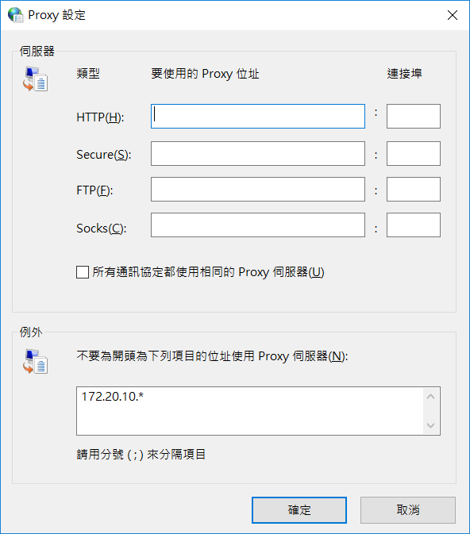

week6 << Previous Next >> week8
week7
查詢IP，並在瀏覽器上使用
查詢自己電腦的IP
ipconfig /all
再利用Flask Hello World 程式來測試
接下來再設定 Proxy
由於我的 IP 是 172.20.10.8 (是內部 IP)
所以設定要將 172.20.10 開的位址排除掉
再利用 Python 執行 w7.py
就可以正常連上 192.168.43.156:5000
week6 << Previous Next >> week8